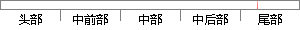

用户可以查看跟删除日志信息，从而实现远程化。
片段位置图

相似结果|
相似片段 1：用户列表的方式，对用户信息进行查看、修改或删除。5．4．2站点管理系统提供了一个简单的站点管理方式，通过站点列表的维护即可实现对站点的查看、修改、删除、增加等。5．4．3系统日志管理系统日志管理可以
相似片段 2：了日志管理模块的用例：当前的登录用户可以编写添加自己的日志、查看所写的日志信息、修改日志内容以及删除多余的日志，并且每个当前登录的用户只能查看、修改和删除自己的日志。24员¨吴一吴图3-9工作日志用例图
相似片段 3：用户发远程指令可以进入查看曰志模块查看所用管理员操作日志和所用用户上机日志，并可以具有对自己管理权限内的日志进行删除。2、系统管理员登陆：当系统管理员登陆本系统时，可以进行如下操作：可以进入系统管理
相似片段 4：123．日志备份功能该功能实现系统己生成的日志信息的备份，用户使用该功能可以通过客户端将服务器中生成的日志信息导出并以文本文件的形式保存本地主机中留作备用和方便查看，以防止服务器崩溃或掉线时无法查看
|
※ 片段修改建议 ※
近似词参考：- 查看：检察
- 日志：日记
- 远程：长途
系统自动生成语句：用户可以检察跟删除日记信息，从而实现长途化。
注：本片段修改建议为系统自动生成，仅供参考。